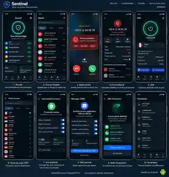

Sentinel Quantum Vanguard AI Pro
Votre téléphone. Vos données. Votre contrôle.
Sentinel réunit la recherche de numéros, la protection contre les appels indésirables, la messagerie et les outils de sécurité dans une seule expérience. Les fonctions sont présentées simplement, selon ce qui est disponible aujourd’hui et ce qui arrive ensuite.
Protection du téléphone
Identifier, filtrer et agir sans perdre le contrôle.
Commencez gratuitement par la recherche de numéros. L’application Android étend ensuite la protection aux appels, à l’identification des correspondants et à la messagerie.
Recherche de numéro gratuite
Recherchez un numéro ou un préfixe et consultez les informations disponibles sur son attribution et son territoire, avec une présentation claire de leur origine.
Lancer une rechercheAppels, identification et messagerie protégée.
Les principales fonctions Android sont en cours de validation sur des appareils réels. L’application ne sera proposée au téléchargement qu’après ces vérifications.
Application Android
Une interface claire pour les protections du quotidien.
Voici un aperçu des principaux écrans de Sentinel sur Android. Les fonctions encore en validation ou à venir sont indiquées directement.
Présent
Accueil protection
Vos protections principales et leurs raccourcis au même endroit.
Écran principal de l’application Sentinel.
Voir l’aperçu complet

Protections complémentaires
Un seul univers, plusieurs niveaux de protection.
Au-delà du téléphone, Sentinel regroupe des outils de surveillance, de veille et de contrôle destinés aux usages plus avancés.
Vue d’ensemble
Retrouvez les événements importants et les informations utiles dans un espace unique.
Veille des menaces
Suivez les vulnérabilités et les signaux utiles avec leur provenance et leur niveau de confiance.
Contrôle de l’IA
Gardez une trace claire des décisions, des règles et des validations importantes.
Tests de défense
Évaluez la résistance de vos protections dans un cadre autorisé et contrôlé.
Protection des accès
Réduisez les accès implicites et gardez des frontières claires entre les données et les services.
Exposition numérique
Repérez les informations publiques ou autorisées qui peuvent augmenter votre exposition en ligne.
Transparence
Vous savez toujours ce qui est disponible.
Chaque fonction est classée simplement pour éviter toute confusion entre ce que vous pouvez utiliser aujourd’hui et ce qui arrive plus tard.
Utilisable aujourd’hui
La fonction est accessible au public dans les conditions indiquées.
Dernières vérifications
La fonction existe mais doit encore terminer ses essais avant sa mise à disposition.
Prévu ensuite
La fonction fait partie de la suite du produit mais n’est pas encore proposée.
Offre
La recherche téléphonique reste gratuite.
Les protections plus avancées seront proposées séparément lorsqu’elles seront prêtes, avec un périmètre et un tarif clairement affichés.
Recherche & téléphone
Recherche téléphonique sur le Web et fonctions de base de l’application Android lorsqu’une version validée sera distribuée.
Utiliser la recherche gratuiteProtections professionnelles
Des fonctions supplémentaires pour la veille, la sécurité et le suivi, séparées du socle gratuit.
Voir les offres
Avancement
Consulter l’avancement
Voir ce qui est disponible et ce qui arrive ensuite.
Consultez l’avancement de Sentinel fonction par fonction, avec des statuts simples et lisibles.